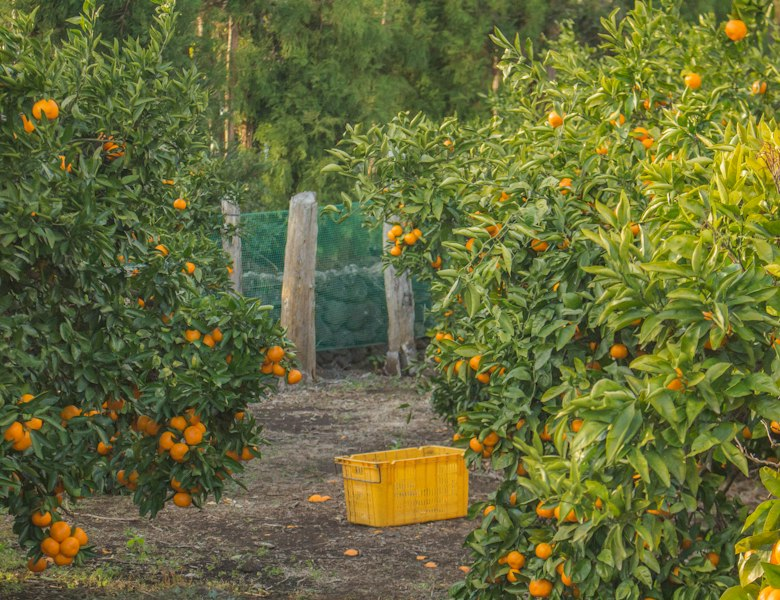

farmclub

10월 · 수확 전 예약
서귀포 하우스 귤이
지금 익어가고 있어요
강씨네 귤밭 · 하우스 감귤 5kg 보러 가기 →
지금 예약하면 이득
마감 임박순
상품을 불러오지 못했어요
인터넷 연결을 확인하고 다시 시도해 주세요.
다시 시도
농가 둘러보기
모두 보기
강씨네 귤밭
제주 서귀포 · 팔로워 128명
한라네 과수원
제주 제주시 · 팔로워 86명
효돈 하우스농원
제주 서귀포 · 팔로워 41명
발견
소식
채팅
2
내 정보